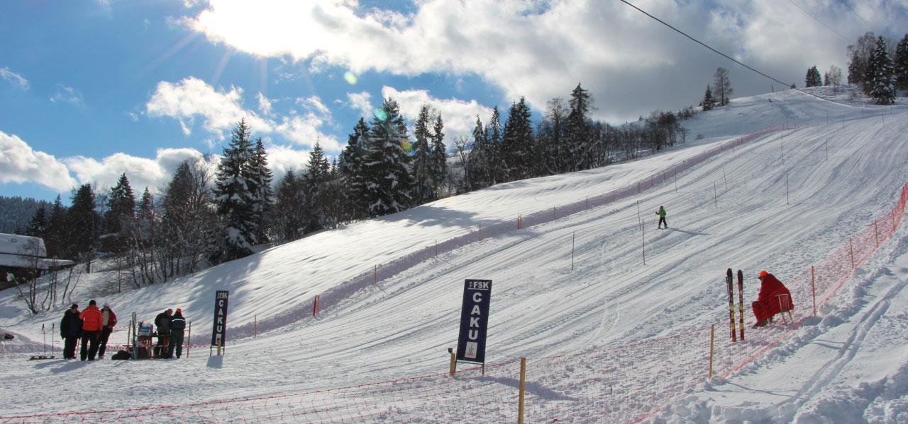

Skiing
Skiing in Brezovica

Brezovica has intermediate skiing on nice long, mainly treeless, runs. Brezovica is not very large but this is a pretty and popular Winter resort in Kosovo. With skiing covering 2550 hectares of the northern slopes of the lofty Shar Mountain, Brezovica enjoys an excellent vertical range from November until May. In 1984 it was chosen as an alternative site for the Sarajevo Olympic downhill and the infamous Orlovo Gnezdo is incredibly steep. Brezovica suffered two years of closure during the 98-99 war but is popular again. There are 4 hotels at Brezovica. Three new lifts opened in 2008. The Velika Livada 2 person chairlift is the newest and fastest one, it is fully functional and it provides access to the Big Valley and the Lions Neck just like Karaula used to, a mid-way stop has been added to this lift recently as a starting point for early May skiing. The Lavja Vrata 2 person lift is old but still functional, it is one of the first two person chairlifts in the Balkans and it helps you access the Lions Neck. Currently, Brezovica has 3 open pistes, the Lions Neck, Big Valley, and the Red Rock/Tepsija. There is a lot of space for further development and backcountry skiing. One of the slopes is able to host Giant Slaloms, and all of the slopes are FIS certified.
Skiing in Boga, Rugova
Boga is a small village in the Albanian Alps in western Kosovo. Boga belongs to the municipality of Peja. There are 3 km of slopes available for skiing and snowboarding. 1 lift transports the guests. The winter sports area is at an altitude of 1,360 to 1,570 m. Boga is a holiday resort that is only inhabited by 24 people. The village is located at an altitude of about 1400 m on the southern slopes of the Hajla mountain range 2403 m about 21 kilometers west of Peja. In addition to a winter sports resort, Boga also serves as a starting point for hikes in the area. The Bistrica e Pejës has its source near Boga and continues down the valley to form the Rugova Gorge. Boge is quickly becoming a popular resort in Kosovo. Many holiday homes have been built and the presence of the ski area attracts many visitors. Boge is the second ski area next to the larger Brezovica in the south of the country. Hiking in Boge Hajla Mountain (2,403m) offers some of the most remote and wildest landscapes. Picturesque mountain villages are inhabited by farming communities where agricultural practices and traditional astoral life have been preserved for generations.